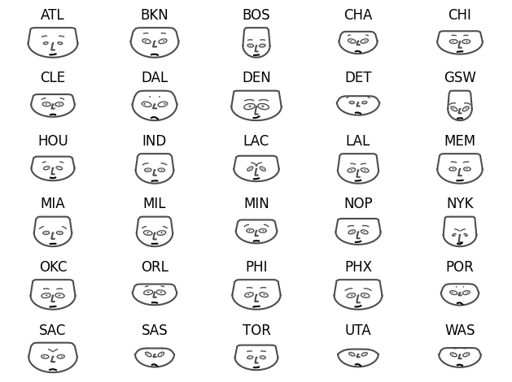
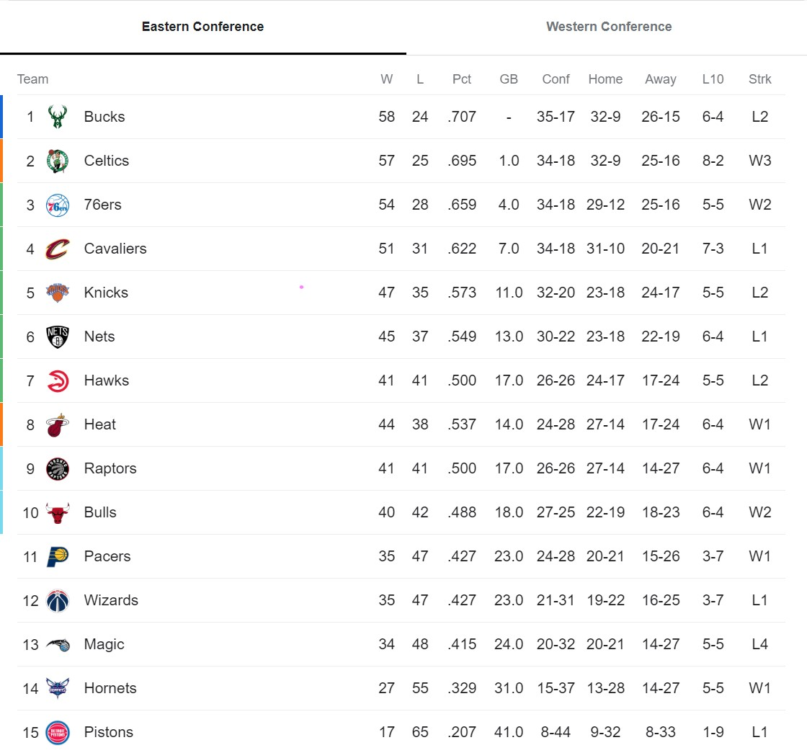
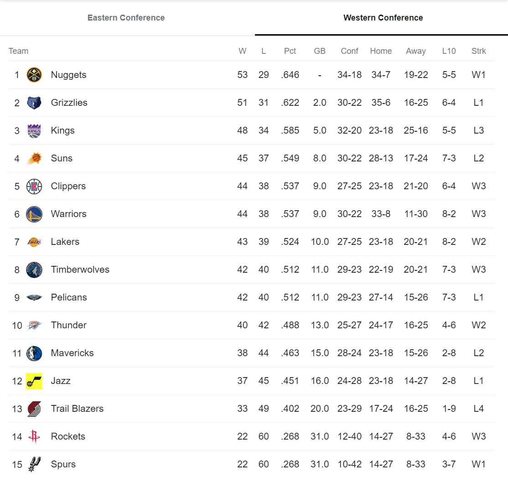
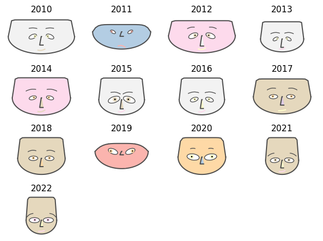

7 O que define um time bom?
7.1 Chernoff Faces
Últimos campeões e vices da NBA:
2013 - San Antonio Spurs | Miami Heat
2014 - Golden State Warriors | Cleveland Cavaliers
2015 - Cleveland Cavaliers | Golden State Warriors
2016 - Golden State Warriors | Cleveland Cavaliers
2017 - Golden State Warriors | Cleveland Cavaliers
2018 - Toronto Raptors | Golden State Warriors
2019 - Los Angeles Lakers | Miami Heat
2020 - Milwaukee Bucks | Phoenix Suns
2021 - Golden State Warriors | Boston Celtics
2022 - Denver Nuggets | Miami Heat
    Últimas posições na temporada regular do Golden State Warriors:
2010 - 3º
2011 - 4º
2012 - 2º
2013 - 2º
2014 - 1º
2015 - 1º
2016 - 1º
2017 - 1º
2018 - 1º
2019 - 5º
2020 - 4º
2021 - 2º
2022 - 4º
Concluindo, é possível observar tendencias de padrão e comportamento semelhantes em anos ou times que são parecidos, porém devido a natureza do gráfico e a falta de informação, principalmente para o “usuário” final, sobre os componentes representados por cada item (tamanho dos olhos, posição, inclinação da sobrancelha, etc.), não é possível fazer análises mais profundas.
Vemos como um gráfico de apoio para facilitar algumas visualizações ou fomentar questionamentos, por exemplo: os gráficos de 2015 e 2017 são significativamente diferentes, apesar do time ter sido campeão em ambas as temporadas. O desempenho nesses anos foi muito diferente? Ou então, os Pacers (IND) e os Wizards (WAS) tiveram o mesmo aproveitamento na temporada (0.427), porém seus gráficos são distintos. O que será que aconteceu? Sabemos que o resultado final de um jogo é apenas vitória ou derrota, porém a margem de pontos pode ser de 1 ou de 20, bem como a quantidade de arremesos, roubadas de bola, entre outros. Um time pode ter tido um desempenho comparável a times pior classificados e ter tido “sorte” de ganhar a quantidade suficiente de jogos, mesmo que por uma margem pequena e perder por muito, enquanto outro sempre tinha jogos parelhos, porém perdeu em mais ocasiões.